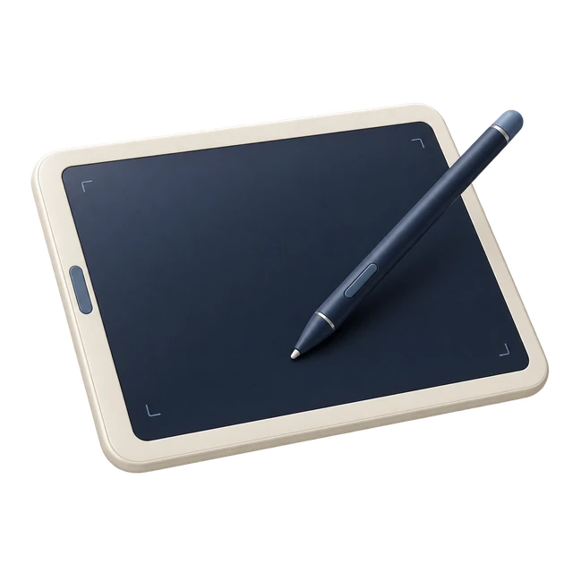
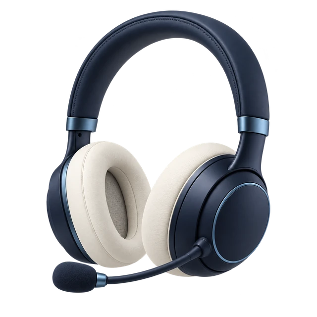
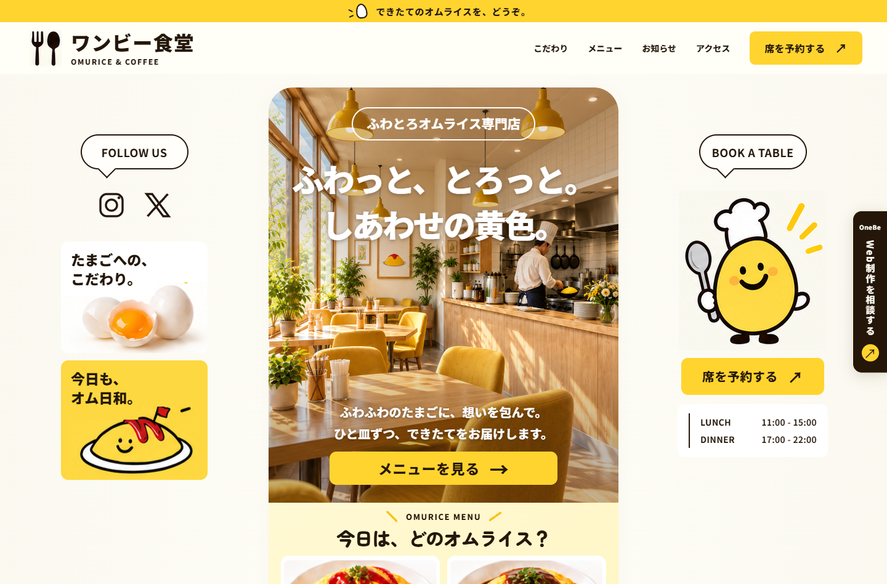

想い・強みの整理
ビジネスの背景や強みを丁寧にヒアリングし、伝わる言葉に整理します。
小さなお店・会社のための定額Webサービス
想い・強みの整理から、公開後の更新・改善まで。
月額10,000円〜［税込］
初期費用30,000円（税込）／サーバー費別途
制作イメージ ／ 横にスワイプして、ぐるりと見てみる

オリジナル制作
月5回までの
修正・更新

公開後も
伴走サポート
YOUR WEB PARTNER
OneBeは、ビジネスの想いや強みを丁寧に整理し、
あなただけのオリジナルホームページを制作。
公開後も、更新・改善まで継続してサポートします。

制作イメージ
ビジネスの想いや強みを一緒に整理し、言葉にします。
整理した内容をもとに、あなただけのホームページを制作。
月5回までの更新・修正と、改善のご提案で継続してサポート。
SERVICE
制作から公開後まで、必要なことをひとつの窓口で支援します。
ビジネスの背景や強みを丁寧にヒアリングし、伝わる言葉に整理します。
あなたの事業に合わせた、あなただけのホームページを制作します。
テキストや画像の差し替えなど、日々の軽微な更新に対応します。
アクセス状況をもとに、よりよいホームページにするためのご提案を行います。
PRICE
制作から、公開後の更新・改善まで。
月額20,000円
税込
7〜12ページ
多くの情報を整理して、
しっかり伝えたい方へ
初期費用 30,000円（税込）／サーバー費別途
最低契約期間：公開日から6か月
更新は同一ページ・同一目的の軽微な修正を1回と数えます。
大幅な変更・機能追加は対象外。別途ご相談ください。
料金・サービス内容：2026年9月24日時点
FLOW
はじめての方でも安心。
シンプルな流れで進めます。
まずはお気軽に。
お店のこと、Webのことをお聞かせください。
事業の想いや強みを丁寧にヒアリングします。
デザイン・制作を進め、ご確認・承認後に公開します。
公開後も更新・修正と改善提案でサポートします。
FAQ
はい。事業のことや、ホームページで伝えたいことからお聞かせください。内容の整理・構成設計から制作、公開後の更新までOneBeがサポートします。
ヒアリング・強みの整理、構成設計、オリジナルデザイン、月5回までの軽微な修正・更新、改善レポートが含まれます。制作するページ数はSimpleが1ページ、Plusが2〜6ページ、Premiumが7〜12ページです。
同一ページ・同一目的の軽微な修正を1回と数え、月5回まで対応します。テキストや画像の差し替えなどが対象です。大幅な変更や機能追加は対象外のため、別途ご相談ください。
初期費用30,000円（税込）と、別途サーバー費用がかかります。追加制作や機能追加などの費用は、内容を確認したうえでご案内します。
最低契約期間は、ホームページの公開日から6か月です。詳しい契約条件は、お申し込み前にご案内します。
はい。現在のホームページと課題を確認したうえで、制作内容をご提案します。移行や追加作業が必要な場合は、対応範囲と費用を事前にご案内します。